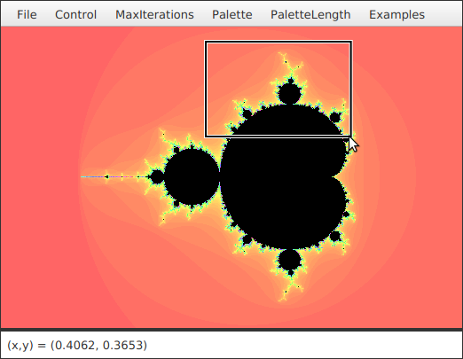

Section 13.5
Finishing Touches
In this final section, I will present a program that is more complex and a little more polished than those we have looked at previously. Most of the examples in this book have been "toy" programs that illustrated one or two points about programming techniques. It's time to put it all together into a full-scale program that uses many of the techniques that we have covered, and a few more besides. After discussing the program and its basic design, I'll use it as an excuse to talk briefly about some of the features of Java that didn't fit into the rest of this book, including some that apply to all programs, not just GUI programs.
The program that we will look at is a Mandelbrot Viewer that lets the user explore the famous Mandelbrot set. I will begin by explaining what that means. Note that an even more capable Mandelbrot program can be found at
http://math.hws.edu/eck/js/mandelbrot/java/MB-java.html.
And there is a JavaScript version that will run in your web browser at
http://math.hws.edu/eck/js/mandelbrot/MB.html
13.5.1 The Mandelbrot Set
The Mandelbrot set is a set of points in the xy-plane that is defined by a computational procedure. To use the program, all you really need to know is that the Mandelbrot set can be used to make some pretty pictures, but here are the mathematical details: Consider the point that has real-number coordinates (a,b) and apply the following computation:
Let x = a Let y = b Repeat: Let newX = x*x - y*y + a Let newY = 2*x*y + b Let x = newX Let y = newY
As the loop is repeated, the point (x,y) changes. The question for the Mandelbrot set is, does (x,y) grow without bound, or is it trapped forever in a finite region of the plane? If (x,y) escapes to infinity (that is, grows without bound), then the starting point (a,b) is not in the Mandelbrot set. If (x,y) is trapped in a finite region, then (a,b) is in the Mandelbrot set. Now, it is known that if x2 + y2 ever becomes strictly greater than 4, then (x,y) will escape to infinity. So, if x2 + y2 ever becomes bigger than 4 in the above loop, we can end the loop and say that (a,b) is definitely not in the Mandelbrot set. For a point (a,b) in the Mandelbrot set, the loop will never end. When we do this on a computer, of course, we don't want to have a loop that runs forever, so we put a limit on the number of times that the loop is executed. That limit is maxIterations:
x = a;
y = b;
count = 0;
while ( x*x + y*y < 4.1 ) {
count++;
if (count > maxIterations)
break;
double newX = x*x - y*y + a;
double newY = 2*x*y + b;
x = newY;
y = newY;
}
After this loop ends, if count is less than or equal to maxIterations, we can say that (a,b) is definitely not in the Mandelbrot set. If count is greater than maxIterations, then (a,b) might or might not be in the Mandelbrot set, but the larger maxIterations is, the more likely that (a,b) is actually in the set.
To make a picture from this procedure, use a rectangular grid of pixels to represent some rectangle in the plane. Each pixel corresponds to some real number coordinates (a,b). (Use the coordinates of the center of the pixel.) Run the above loop for each pixel. If the count goes past maxIterations, color the pixel black; this is a point that is possibly in the Mandelbrot set. Otherwise, base the color of the pixel on the value of count after the loop ends, using different colors for different counts. In some sense, the higher the count, the closer the point is to the Mandelbrot set, so the colors give some information about points outside the set and about the shape of the set. However, it's important to understand that the colors are arbitrary and that colored points are definitely not in the set. Here is a screenshot from the Mandelbrot Viewer program that uses this computation. The black region is the Mandelbrot set (except that not all black points are known to be definitely in the set):

When you use the program, you can "zoom in" on small regions of the plane. To do so, just click-and-drag the mouse on the image. This will draw a rectangular "zoom box" around part of the image, as shown in the illustration. When you release the mouse, the part of the picture inside the rectangle will be zoomed to fill the entire display. If you simply click a point in the picture, you will zoom in on the point where you click by a magnification factor of two. (Shift-click or use the right mouse button to zoom out instead of zooming in.) The interesting points are along the boundary of the Mandelbrot set. In fact, the boundary is infinitely complex. (Note that if you zoom in too far, you will exceed the capabilities of the double data type; nothing is done in the program to prevent this. The image will first become "blocky" and then meaningless.)
You can use the "MaxIterations" menu to increase the maximum number of iterations in the loop. Remember that black pixels might or might not be in the set; when you increase "MaxIterations," you might find that a black region becomes filled with color. The "Palette" menu determines the set of colors that are used. Different palettes give very different visualizations of the set, but it's just the arbitrary colors that are different. The "PaletteLength" menu determines how many different colors are used. In the default setting, a different color is used for each possible value of count in the algorithm. Sometimes, you can get a much better picture by using a different number of colors. If the palette length is less than maxIterations, the palette is repeated to cover all the possible values of count; if the palette length is greater than maxIterations, only part of of the palette will be used. (If the picture is of an almost uniform color, try decreasing the palette length, since that makes the color vary more quickly as count changes. If you see what look like randomly colored dots instead of bands of color, try increasing the palette length.)
The program has a "File" menu that can be used to save the picture as a PNG image file. You can also save a "param" file which simply saves the settings that produced the current picture. A param file can be read back into the program using the "Open" command.
The Mandelbrot set is named after Benoit Mandelbrot, who was the first person to note the incredible complexity of the set. It is astonishing that such complexity and beauty can arise out of such a simple algorithm.
13.5.2 Design of the Program
Most classes in Java are defined in packages. While we have used standard packages such as javafx.scene.control and java.io extensively, almost all of my programming examples have been in the "default package," which means that they are not declared to belong to any named package. However, when doing more serious programming, it is good style to create a package to hold the classes for your program. The Oracle corporation recommends that package names should be based on an Internet domain name of the organization that produces the package. My office computer has domain name eck.hws.edu, and no other computer in the world should have the same name. According to Oracle, this allows me to use the package name edu.hws.eck, with the elements of the domain name in reverse order. I can also use sub-packages of this package, such as edu.hws.eck.mdbfx, which is the package name that I decided to use for my Mandelbrot Viewer application. No one else—or at least no one else who uses the same naming convention—will ever use the same package name, so this package name uniquely identifies my program.
I briefly discussed using packages in Subsection 2.6.6 and in the context of the programming examples in Section 12.5. Here's what you need to know for the Mandelbrot Viewer program: The program is defined in seven Java source code files. They can be found in the directory edu/hws/eck/mdbfx inside the source directory of the web site. (That is, they are in a directory named mdbfx, which is inside a directory named eck, which is inside hws, which is inside edu. The directory structure must follow the package name in this way.) The same directory also contains a file named strings.properties; this file is used by the program and will be discussed below. And there is an examples folder that contains resource files that are used with an "Examples" menu. For an Integrated Development Environment such as Eclipse, you should just have to add the edu directory to your project. If you want to work on the command line instead, you must be working in the directory that contains the edu directory. To compile the source code, use the command
javac edu/hws/eck/mdbfx/*.java
or, if you use Windows,
javac edu\hws\eck\mdbfx\*.java
The main application class for the program is defined by a class named Main. To run the program, use the command:
java edu.hws.eck.mdbfx.Main
This command must also be given in the directory that contains the edu directory.
The work of computing and displaying images of the Mandelbrot set is done in the file MandelbrotCanvas.java. The MandelbrotCanvas class is a subclass of Canvas that can compute and display visualizations of the Mandelbrot set, as discussed above. The image that is shown is determined by the ranges of x and y values that are visible, the maximum number of iterations for the Mandelbrot algorithm, and the palette that is used to color the pixels. The values for these inputs come from elsewhere in the program; MandelbrotCanvas just calculates and displays the image, based on the inputs that it is given.
In addition to coloring the pixels of the image, the MandelbrotCanvas class uses a two-dimensional array to store the iteration count for each pixel in the image. As discussed above, the iteration count for a pixel is used, along with the palette, to determine the color to use for that pixel. If the palette is changed, the iteration counts are used to reset the color of each pixel without doing the whole Mandelbrot computation again. However, if the range of xy-values changes, or if the size of the window changes, all of the iteration counts must be recomputed. Since the computation can take a while, it would not be acceptable to block the user interface while the computation is being performed. The solution is to do the computation in separate "worker" threads, as discussed in Subsection 12.2.3. The program uses one worker thread for each available processor. When the computation begins, the image is transparent and you see the gray background of the window. The full computation is broken into tasks, where each task computes one row of the image. After finishing the computation, the task will apply the appropriate colors to the pixels in the assigned row. Since the canvas can only be modified in the JavaFX application thread, the task uses Platform.runLater() to make the changes. (See Subsection 12.2.1.) The user can continue to use the menus and even the mouse while the image is being computed.
The file MandelbrotPane.java represents the entire content of the Mandelbrot Viewer window. MandelbrotPane is a subclass of BorderPane. The center position of a MandelbrotPane holds a MandelbrotCanvas. In fact, a second, transparent, "overlay" canvas is stacked on top of the canvas that contains the image. When the user draws a "zoom box" with the mouse, the zoom box is actually drawn in the top canvas so that drawing it does not damage the image. (See Subsection 13.2.4.) The bottom position in the MandelbrotPane contains a Label, which serves as a "status bar" showing some information that might be interesting to the user. Finally, there is a menu bar at the top of the pane.
The menu bar for the program is defined in Menus.java, which defines a subclass of MenuBar. (See Subsection 6.6.2 for a discussion of menus and menu items.) All of the menu items in the Menus class, as well as the commands that they represent, are implemented by methods and nested subclasses in that class. Among the commands are file manipulation commands that use techniques from Subsection 11.2.3, Subsection 11.5.2, and Subsection 13.2.6. The "MaxIterations," "Palette," and "PaletteLength" menus each contain a group of RadioMenuItems. In this program, I have defined a nested class inside Menus to represent each group. For example, the PaletteManager class contains the menu items in the "Palette" menu as instance variables. It registers an action event handler with each item, and it defines a few utility routines for operating on the menu. The classes for the three menus are very similar and should probably have been defined as subclasses of some more general class. There is also an "Examples" menu that contains settings for several sample views of pieces of the Mandelbrot set.
Much of the work of the program is done in MandelbrotPane. It installs MousePressed, MouseDragged, and MouseReleased event handlers on the overlay canvas to implement zooming the image. It also installs a MouseMoved event handler that updates the status bar to display the xy-coordinates in the image that correspond to the mouse location. (A MouseMoved event is generated when the user simply moves the mouse without holding down a mouse button.) And a MouseExited event handler on the canvas is used to reset the status bar to read "Idle" when the mouse moves out of the canvas.
Furthermore, many menu commands are implemented by calling methods in the MandebrotPane class. The Menus class has an instance variable named owner that refers to the MandelbrotPane that contains the menu bar, and that variable can be used to call methods from the MandelbrotPane. For example, there is a setLimits() method that can be called to set the range of xy-values that are shown in the image, and there are methods for setting the palette, the palette length, and the value of maxIterations. Whenever one of these properties is changed, the Mandelbrot image has to be modified. When the palette or palette length is changed, MandelbrotPane computes a new palette of colors, and calls a method in MandelbrotCanvas to tell it to use the new palette. When the limits or maxIterations are changed, the image will have to be entirely recomputed. MandelbrotPane calls a startJob() method in MandelbrotCanvas to tell it to start a new job. All of the work of setting up and managing the job is done in MandelbrotCanvas.
The MandelbrotPane that is being used in the program is a parameter to the Menus constructor, and the Menus object saves a copy in an instance variable, owner. Many of the menu commands operate on the MandelbrotPane or on the MandelbrotCanvas that it contains. In order to carry out these commands, the Menus object needs a reference to the MandelbrotPane. As for the MandelbrotCanvas, the panel has a method getDisplay() that returns a reference to the canvas that it contains. So, the menu bar can obtain a reference to the canvas by calling owner.getDisplay(). In previous examples in this book, everything was written as one large class file, so all the objects were directly available to all the code. When a program is made up of multiple interacting files, getting access to the necessary objects can be more of a problem.
MandelbrotPane, MandelbrotCanvas, and Menus are the major classes in the Mandelbrot Viewer program. Main.java defines the subclass of Application that must be executed to run the program. Its start() method just places a MandelbrotPane into the program's primary stage. (See Subsection 6.6.3.) It also has one other task, which is discussed below. The program also contains three other classes. Two of them, from SetImageSizeDialog.java and SetLimitsDialog.java, define custom dialog boxes. I will not discuss them further; see Subsection 13.4.1. The final class is I18n, which I will discuss below.
This brief discussion of the design of the Mandelbrot Viewer has shown that it uses a wide variety of techniques that were covered earlier in this book. In the rest of this section, we'll look at a few new features that are used in the program.
13.5.3 Events, Listeners, and Bindings
We have worked extensively with events and event listeners, and to a lesser extent with binding of observable properties. But it is interesting to look at how they are used in the Mandelbrot Viewer program, where there are several classes involved.
Let's start from the following fact: The MandelbrotCanvas class knows nothing about the Menus class, yet the menu bar contains menu items that seem to know what's happening in the canvas class. In particular, some of the menu items are disabled when a computation is in progress. Since the canvas does not call methods or use variables from the menu class, how can the menus know whether or not a computation is in progress in the canvas? The answer, of course, is events—or more exactly, a binding (Subsection 13.1.2). A MandelbrotCanvas has an observable boolean property named working that is true exactly when a computation is in progress. The menu items should be disabled when the value of that property is true. That can be set up in one line by binding the disableProperty of the menu item to the workingProperty of the canvas. For example, this is done in the Menus constructor for the saveImage menu item with the command
saveImage.disableProperty().bind(owner.getDisplay().workingProperty());
Here, owner refers to the MandelbrotPane, and owner.getDisplay() is the MandelbrotCanvas that it contains.
Similarly, there is a "Restore Previous Limits" menu command that will reset the range of the xy-values in the image to their values before the most recent change. The Menus class uses an instance variable, previousLimits, of type double[], to remember the previous limits. But how does it get that information? When the user zooms in or out on the image, the change takes place entirely in the MandelbrotPane class. There has to be a way for the menus to be notified of the change. Again, the solution is an observable property, this time of type ObjectProperty<double[]>. The Menus constructor adds a ChangeListener to the limitsProperty from the MandelbrotPane class:
owner.limitsProperty().addListener( (o,oldVal,newVal) -> {
// save old value of limitsProperty for use in "Restore Previous Limits"
previousLimits = oldVal;
undoChangeOfLimits.setDisable( previousLimits == null );
});
The point is that because events are used for communication, the MandelbrotCanvas and MandelbrotPane classes are not strongly coupled to the Menus class. In fact, they could be used without any modification in other programs that don't even use the same Menus class. The alternative to using events and binding would be to have the canvas and display classes call methods such as limitsChanged() or computationStarted() in the Menus class. This would be strong coupling: Any programmer who wanted to use MandelbrotCanvas would also have to use Menus as well, or would have to modify the canvas class so that it no longer refers to the Menus. Of course, not everything can be done with events and not all strong coupling is bad: The MandelbrotPane class refers directly to the MandelbrotCanvas class and cannot be used without it—but since the whole purpose of a MandelbrotPane is to hold a MandelbrotCanvas, the coupling is not a problem. (MandelbrotCanvas, on the other hand, could be used independently of MandelbrotPane.)
There is another interesting use of events in MandelbrotPane. The image canvas and overlay canvas are contained in a StackPane named displayHolder. When the user changes the size of the window, the size of the displayHolder is changed to match. When that happens, the canvasses should be resized to fit the new display size, and a new computation should be started to compute a new image. The MandelbrotPane class installs listeners on the height and width properties of displayHolder to respond to changes in size. (See the discussion of canvas resizing in Subsection 13.1.2.) However when the user dynamically changes the size of the window, the size of displayHolder can change many times each second. It is a fairly big deal to set up and start a new image computation, not something I want to do many times in a second. If you try resizing the program's window, you'll notice that the canvas doesn't change size dynamically as the window size changes. The same image is shown as long as the size is changing. Only about one-third of a second after the size has stopped changing will a new, resized image be computed. Here is how this works.
The listeners that handle changes in the size of displayHolder are set up to call a method named startDelayedJob():
displayHolder.widthProperty().addListener( e -> startDelayedJob(300,true) ); displayHolder.heightProperty().addListener( e -> startDelayedJob(300,true) );
The first parameter to startDelayedJob() is the number of milliseconds to wait before resizing the canvas and starting a new computation. (The second parameter merely says that the canvas does need to be resized before the computation is started.) To implement the delay, startDelayedJob() uses an object of type Timer, from package java.util. A TimerTask can be submitted to a Timer to be executed after a specified delay. Until the time when it is executed, it is possible to cancel a task. So, startDelayedJob() submits a task to the timer that will resize the canvas after 300 milliseconds. If startDelayedJob() is called again before that delay has expired, it cancels the previous task and submits a new one to the timer. The result is that no task actually gets executed until 300 milliseconds pass with no call to startDelayedJob() in that time.
(There is an option in the program to give a fixed size to the image. In that case, the size of the displayHolder should not change. It is possible that the image might not fill the window, leaving some of the gray background of the window visible. It is also possible that the image might be too big for the window. In that case, scroll bars will appear that can be used to scroll the image. This is done by a ScrollPane, a container that contains one component and provides scroll bars for it if necessary. When the image size is fixed, the displayHolder is removed from the MandelbrotPane and placed into a ScrollPane, and the ScrollPane is then placed in the center position of the MandelbrotPane.)
13.5.4 A Few More GUI Details
To finish this textbook's look at GUI programming, I would like to mention a couple details that haven't quite fit into previous sections.
We have seen that resource files are files that are part of a program but do not contain program code. It is very easy to use image resource files with the Image class (Subsection 6.2.3). But any kind of data can be stored in resource files. For example, the Mandelbrot Viewer program has an "Examples" menu. When the user chooses a command from that menu, the parameters for some particular view of the Mandelbrot set are loaded into the program. Those parameters are stored in a resource file, which uses a simple XML text format. The question is, how does the program get access to the file? Unfortunately, it's not quite as easy as creating an Image from an image resource file.
Resources are stored in files that are in the same locations as the compiled class files for the program. Class files are located and loaded by something called a class loader, which is represented in Java by an object of type ClassLoader. A class loader has a list of locations where it will look for class files. This list is called the class path. It includes the location where Java's standard classes are stored. It generally includes the current directory. If the program is stored in a jar file, the jar file is included on the class path. In addition to class files, a ClassLoader is capable of finding resource files that are located on the class path or in subdirectories of locations that are on the class path.
The first step in using a general resource is to obtain a ClassLoader. That class loader can then be used to locate the resource file. Every object has an instance method getClass(), which returns an object that represents the class of that object. The class object, in turn, has a method getClassLoader() that returns the ClassLoader that loaded the class. So, in an instance method of an object, you can say
ClassLoader classLoader = getClass().getClassLoader();
to get the class loader that you need. Another way to get a reference to a class object is to use ClassName.class, where ClassName is the name of any class. For example, in the Mandelbrot Viewer program, I could have used Menus.class.getClassLoader() to get the class loader for the program.
Once you have a class loader, you can use it to look up a resource file. The class loader will actually return a URL for a file, and you can read the data in the file from that URL. (URLs, and reading the data that they refer to, were discussed in Section 11.4.) To find the resource file, the class loader requires the path to the file, just as for an image resource file. The path includes the file name as well as any directories that you need to traverse to get to the file. The resource files that contain the Mandelbrot examples are inside a chain of directories: edu/hws/eck/mdbfx/examples, and the full path for one of the files whose name is "settings1.mdb" is edu/hws/eck/mdbfx/examples/settings1.mdb. Here's a command that gets a URL for that file:
URL resourceURL =
classLoader.getResource("edu/hws/eck/mdbfx/examples/settings1.mdb");
Once you have the URL, you can open an InputStream to read the data from the file:
InputStream stream = resourceURL.openStream();
and that's exactly what's done to implement the "Examples" menu in the Mandelbrot Viewer program. By using an input stream, you can read any type of data from a resource file, and you can do anything you want with it. But remember that for some kinds of data, such as images, Java has more convenient ways to load the data into a program.
My second, short topic is accelerators for menu items. An accelerator is a key or combination of keys on the keyboard that can be used to invoke the menu item, as an alternative to selecting the menu item with a mouse. A typical example is Control-S for saving a file. The class KeyCombination, from package javafx.scene.input, represents combinations of keys that can be used for accelerators. A KeyCombination can be created from a string such as "ctrl+S". The string contains items separated by plus signs. Each item except for the last represents a modifier key: "ctrl", "alt", "meta", "shift" and "shortcut". (The modfiers can use upper or lower case.) The "shortcut" modifier is special: On a Mac, it is equivalent to the command key, "meta"; on Windows and Linux, it is equivalent to the control key, "ctrl". So, by using "shortcut", you get the appropriate modifier for menu commands on the system where the program is running. The last item in a key combination string is one of the enumerated type constants from the KeyCode type. This will generally be an upper case letter, which represents one of the letter keys (it must be upper case), but it can also be a function key such as F9. (Not all keys will work.) For example, the string "ctrl+shift+N" represents holding down the control and shift keys and pressing the "N" key; the string "shortcut+S" represents holding down the appropriate modifier for the computer you are using and pressing the "S" key. The string that describes a key combination can be passed to the static method KeyCombination.valueOf() to make a key combination object that can be used to install an accelerator for a menu item. Here, for example, is the code from the Mandebrot Viewer program that adds an accelerator to the MenuItem, saveImage, for the "Save Image" command:
saveImage.setAccelerator( KeyCombination.valueOf("shortcut+shift+S") );
Accelerators can be used with any kind of menu items, including RadioMenuItem and CheckMenuItem. In all cases when the user types the accelerator key combination, it has the same effect as selecting the item with the mouse. The accelerator for a menu item is ordinarily shown in the menu item, along with the text of the menu item. In the Mandelbrot Viewer program, all of the commands in the "File" and "Control" menus have accelerators.
13.5.5 Internationalization
In the remainder of this section, we look at two topics the apply to all programs, not to GUI programming in particular. These are things that you are not likely to use in a small program written for your own use, but they are important for large applications.
Internationalization refers to writing a program that is easy to adapt for running in different parts of the world. Internationalization is often referred to as I18n, where 18 is the number of letters between the "I" and the final "n" in "Internationalization." The process of adapting the program to a particular location is called localization, and the locations are called locales. Locales differ in many ways, including the type of currency used and the format used for numbers and dates, but the most obvious difference is language. Here, I will discuss how to write a program so that it can be easily translated into other languages.
The key idea is that strings that will be presented to the user should not be coded into the program source code. If they were, then a translator would have to search through the entire source code, replacing every string with its translation. Then the program would have to be recompiled. In a properly internationalized program, all the strings are stored together in one or more files that are separate from the Java source code, where they can easily be found and translated. And since the source code doesn't have to be modified to do the translation, no recompilation is necessary.
To implement this idea, the strings are stored in one or more properties files. A properties file is just a list of key/value pairs. For translation purposes, the values are strings that will be presented to the user; these are the strings that have to be translated. The keys are also strings, but they don't have to be translated because they will never be presented to the user. Since they won't have to be modified, the key strings can be used in the program source code. Each key uniquely identifies one of the value strings. The program can use the key string to look up the corresponding value string from the properties file. The program only needs to know the key string; the user will only see the value string. When the properties file is translated, the user of the program will see different value strings.
The format of a properties file is very simple. The key/value pairs take the form
key.string=value string
There are no spaces in the key string or before the equals sign. Periods are often used to divide words in the key string. The value string can contain spaces or any other characters. If the line ends with a backslash ("\"), the value string is continued on the next line; in this case, spaces at the beginning of that line are ignored. One unfortunate detail is that a properties file can contain only plain ASCII characters. The ASCII character set only supports the English alphabet. Nevertheless, a value string can include arbitrary UNICODE characters. Non-ASCII characters just have to be specially encoded. The JDK comes with a program, native2ascii, that can convert files that use non-ASCII characters into a form that is suitable for use as a properties file.
Suppose that the program wants to present a string to the user (as the name of a menu command, for example). The properties file would contain a key/value pair such as
menu.saveimage=Save PNG Image...
where "Save PNG Image..." is the string that will appear in the menu. The program would use the key string, "menu.saveimage", to look up the corresponding value string and would then use the value string as the text of the menu item. In Java, the lookup process is supported by the ResourceBundle class, which knows how to retrieve and use properties files. Sometimes a string that is presented to the user contains substrings that are not known until the time when the program is running. A typical example is the name of a file. Suppose, for example, that the program wants to tell the user, "Sorry, the file, filename, cannot be loaded", where filename is the name of a file that was selected by the user at run time. To handle cases like this, value strings in properties files can include placeholders that will be replaced by strings to be determined by the program at run time. The placeholders take the form "{0}", "{1}", "{2}", .... For the file error example, the properties file might contain:
error.cantLoad=Sorry, the file, {0}, cannot be loaded
The program would fetch the value string for the key error.cantLoad. It would then substitute the actual file name for the placeholder, "{0}". Note that when the string is translated, the word order might be completely different. By using a placeholder for the file name, the translator can make sure that the file name is put in the correct grammatical position for the language that is being used. Placeholder substitution is not handled by the ResourceBundle class, but Java has another class, MessageFormat, that makes such substitutions easy.
For the Mandelbrot Viewer program, the properties file is strings.properties. (Any properties file should have a name that ends in ".properties".) Any string that you see when you run the program comes from this file. For handling value string lookup, I wrote the class I18n.java. The I18n class has a static method
public static tr( String key, Object... args )
that handles the whole process. Here, key is the key string that will be looked up in strings.properties. Additional parameters, if any, will be substituted for placeholders in the value string. (Recall that the formal parameter declaration "Object..." means that there can be any number of actual parameters after key; see Subsection 7.1.2.) Typical uses would include:
String saveImageCommandText = I18n.tr( "menu.saveimage" ); String errMess = I18n.tr( "error.cantLoad" , selectedFile.getName() );
You will see function calls like this throughout the Mandelbrot Viewer source code. The I18n class is written in a general way so that it can be used in any program. As long as you provide a properties file as a resource, the only things you need to do are change the resource file name in I18n.java and put the class in your own package.
It is actually possible to provide several alternative properties files in the same program. For example, you might include French and Japanese versions of the properties file along with an English version. If the English properties file is named strings.properties, then the names for the French and Japanese versions should be strings_fr.properties and strings_ja.properties. Every language has a two-letter code, such as "fr" and "ja", that is used in constructing properties file names for that language. The program asks for the properties file using the simple name "strings". If the program is being run on a Java system in which the preferred language is French, the program will try to load "strings_fr.properties"; if that fails, it will look for "strings.properties". This means that the program will use the French properties files in a French locale; it will use the Japanese properties file in a Japanese locale; and in any other locale it will use the default properties file.
13.5.6 Preferences
Most serious programs allow the user to set preferences. A preference is really just a piece of the program's state that is saved between runs of the program. In order to make preferences persistent from one run of the program to the next, the preferences could simply be saved to a file in the user's home directory. However, there would then be the problem of locating the file. There would be the problem of naming the file in a way that avoids conflicts with file names used by other programs. And there would be the problem of cluttering up the user's home directory with files that the user shouldn't even have to know about.
To deal with these problems, Java has a standard means of handling preferences. It is defined by the package java.util.prefs. In general, the only thing that you need from this package is the class named Preferences.
In the Mandelbrot Viewer program, the file Main.java has an example of using Preferences. In most programs, the user sets preferences in a custom dialog box. However, the Mandelbrot program doesn't have any preferences that are appropriate for that type of treatment. Instead, as an example, I automatically save a few aspects of the program's state as preferences. Every time the program starts up, it reads the preferences, if any are available. Every time the program terminates, it saves the preferences. (Saving the preferences poses an interesting problem because the program ends when the application window closes, and we need a way to arrange for preferences to be saved whenever that happens. The solution is to use events: The start() method in Main registers an event handler with the window to listen for the event that is generated when the window closes. The handler for that event saves the preferences.)
Preferences for Java programs are stored in some platform-dependent form in some platform-dependent location. As a Java programmer, you don't have to worry about it; the Java preferences system knows where to store the data. There is still the problem of identifying the preferences for one program among all the possible Java programs that might be running on a computer. Java solves this problem in the same way that it solves the package naming problem. In fact, by convention, the preferences for a program are identified by the package name of the program, with a slight change in notation. For example, the Mandelbrot Viewer program is defined in the package edu.hws.eck.mdbfx, and its preferences are identified by the string "/edu/hws/eck/mdbfx". (The periods have been changed to "/", and an extra "/" has been added at the beginning.)
The preferences for a program are stored in something called a "node." The user preferences node for a given program identifier can be accessed as follows:
Preferences root = Preferences.userRoot(); Preferences node = root.node(pathName);
where pathname is the string, such as "/edu/hws/eck/mdbfx", that identifies the node. The node itself consists of a simple list of key/value pairs, where both the key and the value are strings. You can store any strings you want in preferences nodes—they are really just a way of storing some persistent data between program runs. In general, though, the key string identifies some particular preference item, and the associated value string is the value of that preference. A Preferences object, prefnode, contains methods prefnode.get(key) for retrieving the value string associated with a given key and prefnode.put(key,value) for setting the value string for a given key.
In Main.java, I use preferences to store the shape and position of the program's window. This makes the size and shape of the window persistent between runs of the program; when you run the program, the window will be right where you left it the last time you ran it. I also store the name of the directory that contained the file most recently opened or saved by the user of the program. This is particularly satisfying, since the default behavior for a file dialog box is to start in the working directory, which is hardly ever the place where the user wants to keep a program's files. With the preferences feature, I can switch to the right directory the first time I use the program, and from then on I'll automatically be back in that directory when I use the program again. You can look at the source code in Main.java for the details.
And that's it.... There's a lot more that I could say about Java and about programming in general, but this book is only "An Introduction to Programming Using Java," and it's time for our journey to end. I hope that it has been a pleasant journey for you, and I hope that I have helped you establish a foundation that you can use as a basis for further exploration.